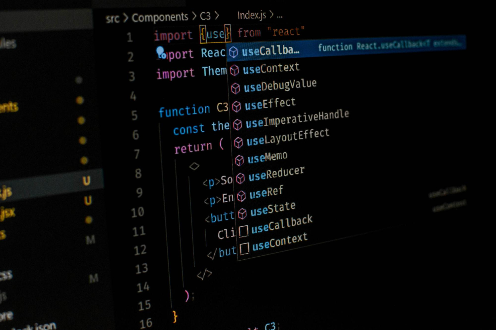

Современные технологии веб-разработки
Современные технологии веб-разработки: выбор стека для вашего проекта.
📊 Веб-разработка сегодня — это не просто создание сайтов. Это целая экосистема технологий, фреймворков и инструментов, которые помогают решать самые разные задачи. От простых лендингов до масштабных веб-приложений — каждый проект требует своего подхода и стека технологий.
💻 JavaScript остаётся главным языком веб-разработки. Он используется во фронтенд-разработке для создания интерактивных интерфейсов, в бэкенд-разработке через Node.js, в мобильных приложениях с помощью React Native и в десктопных приложениях через Electron.
📈 Простой JavaScript подходит для лендингов с базовой интерактивностью, одностраничных приложений без сложного бэкенда, маленьких проектов с минимальным функционалом и простых форм с валидацией.
🏢 Серверная часть необходима в случаях, когда требуется работа с данными, базами данных и API, аутентификация и авторизация пользователей, обработка платежей и финансовых операций, а также для масштабируемых приложений с высокой нагрузкой. Среди популярных серверных технологий можно выделить Node.js для real-time приложений, Python (Django/Flask) для аналитических систем, Ruby on Rails для стартапов и PHP (Laravel) для корпоративных решений.
🎯 Современные фронтенд-фреймворки включают React для сложных интерфейсов и переиспользуемых компонентов, Vue.js для проектов средней сложности и Angular для крупных enterprise-решений. В области бэкенд-разработки активно используются Express.js для API и микросервисов, Nest.js для enterprise-приложений и Koa для современных Node.js приложений.
🔍 Выбор стека технологий зависит от типа проекта. Для лендингов достаточно HTML, CSS и JavaScript. Интернет-магазины часто разрабатываются на стеке React + Node.js + MongoDB. Социальные сети успешно создаются с использованием Vue.js и Python/Django. CRM-системы обычно реализуются на Angular с Node.js, а мессенджеры требуют комбинации React, Node.js и WebSocket.
🚀 Современные тренды в веб-разработке включают Progressive Web Apps (PWA) как приложения нового поколения, serverless-архитектуру для экономии ресурсов, микрофронтенды для модульности в разработке и TypeScript для повышения качества кода.
💡 При выборе стека технологий важно учитывать сложность проекта, сроки разработки, бюджет, квалификацию команды разработчиков и возможности масштабирования. Правильный выбор стека обеспечивает эффективность разработки, масштабируемость решения, удобство поддержки и конкурентные преимущества.
🎯 Помните, что нет универсального решения — каждый проект уникален, и стек технологий должен соответствовать его специфике и целям. Важно также понимать, что выбор языка программирования зависит от конкретной задачи, не обязательно изучать все технологии сразу, язык программирования является более фундаментальным, чем фреймворк, а использование новых технологий должно быть обосновано с точки зрения рисков и выгод.